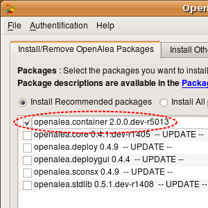

Informations
This tutorial helps you find your way in all the small packages you need to install before you can perform a tissue simulation. For each package two methods exist to install the package. The first one use easy_install :
user@computer:$ alea_install pkg_name
This method is suitable for all users that do not want to use the last developments and use the provided tools to perform some tissue simulation. Packages will be updated at each vplants release only. The other method is suitable for developpers. It consist in installing the different package from their sources (available on gforge.vplants). Once you have checked out the sources in a vplants/ directory for example, just go in the directory of the package and type :
user@computer:vplants/pgk_name/$ python setup.py install
In the sequel, both methods will be described. Choose the one in adequation with your heart.
Installation
openalea
All the packages developped for tissue simulations use extensively the openalea framework that you must first install. Follow this link to install openaleaplantgl
The simulations proposed hereafter make an extensive use of the PlantGL library to represent the geometry of tissue elements.
user@computer:$ alea_install plantgl

celltissue
This package is the core of all tissues representations. It contains a data structure that aims to link different elements using basic relationships. It depends directly from container to access different kinds of relationship. To install container either use the openalea installer or type :
user@computer:$ alea_install container

To install it from source :
user@computer:vplants/container/$ python setup.py install
you can know install the celltissue package. Use the same method than for the previous package.
user@computer:$ alea_install celltissue
 To install it from source :
To install it from source :
user@computer:vplants/tissue/celltissue/$ python setup.py install
The celltissue package provides access methods to directly create and manipulate tissues and a basic persistence scheme to read and write tissues. To test your installation you can run the test_celltisue.py file in this directory.
user@computer:$ python test_celltissue.py
tissueshape
This package contains some high level geometrical functions that let you modify or create the geometry of a tissue.
user@computer:$ alea_install tissueshape
 To install it from source :
To install it from source :
user@computer:vplants/tissue/tissueshape/$ python setup.py install
genepattern
(non mandatory)This package contains the formal definition of gene expression patterns and a set of function to manipulate them. Install this package only if you need to play with gene expression patterns.
user@computer:$ alea_install genepattern
 To install it from source :
To install it from source :
user@computer:vplants/tissue/genepattern/$ python setup.py install
pglviewer
This package provides a set of widgets and views to display 2D and 3D objects. It also provides some facilities to create GUI elements to interact with the user. This package is built around PyQGLViewer, an extension of libQGLViewer from Qt. Qt has been installed in the very first step with openalea. You simply need to install PyQGLViewer (or compile it)
user@computer:$ alea_install pyqglviewer
A small set of tools is required to compile Qt user interface files. So you must first install the qttools package. Use the same method than for any openalea package.
user@computer:$ alea_install qttools
To install it from source :
user@computer:vplants/qttools/$ python setup.py install
You can know install the pglviewer package. Use the same method than for any openalea package.
user@computer:$ alea_install pglviewer
 To install it from source :
To install it from source :
user@computer:vplants/pglviewer/$ python setup.py install
To test the installation of pglviewer you can run the test_pglviewer.py file in this directory.
user@computer:$ python test_pglviewer.py
svgdraw
This package provides a set of function to manipulate SVG images. It is used to extract informations from tissues that have been drawn or digitized. See tissue tissue drawing simulation for an example of use.
user@computer:$ alea_install svgdraw
 To install it from source :
To install it from source :
user@computer:vplants/svgdraw/$ python setup.py install
To test the installation of svgdraw you can run the test_svgdraw.py file in this directory.
user@computer:$ python test_svgdraw.py
physics
This package gather all algorithms needed to integrate physical processes like diffusion, mechanics, ... It is used in conjonction with celltissue to perform physical simulations on tissues. Due to the heavy computation it requires, there is currently a C++ version of this package that you can use simply by changing physics by cphysics in all your import statements (after having installed cphysics of course).
user@computer:$ alea_install physics
 To install it from source :
To install it from source :
user@computer:vplants/physics/$ python setup.py install
To test the installation of physics you can run the test_physics.py file in this directory.
user@computer:$ python test_physics.py